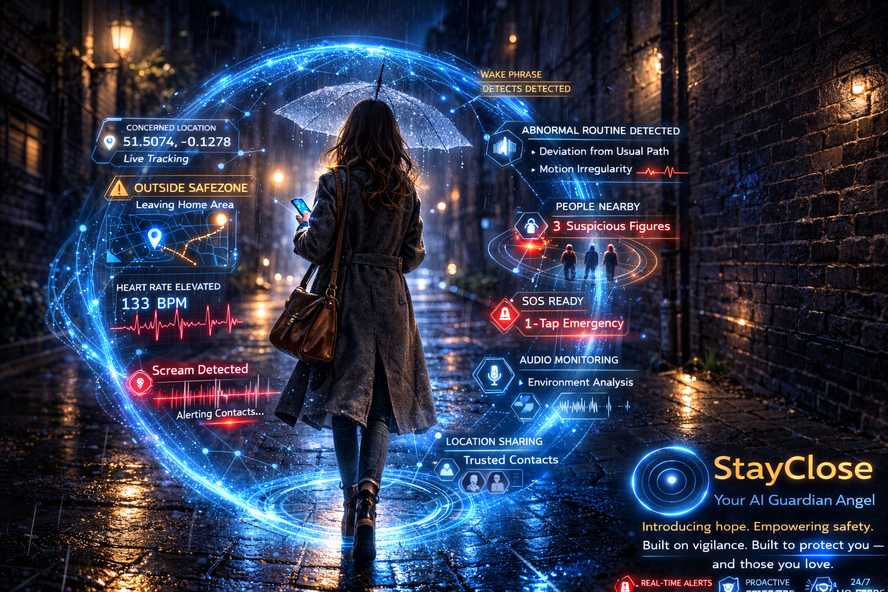

StayClose is a life-saving safety app designed to protect you and your loved ones in real-world emergencies. It detects danger, sends alerts, records evidence, and shares your location instantly when seconds matter most.
Get Early Access
People don’t always have time to react in dangerous situations. StayClose acts instantly — detecting distress, alerting contacts, and recording evidence automatically. It’s designed for real emergencies, not just convenience.
StayClose is more than an app. It’s a guardian system designed to protect people when they need it most.
Join Waitlist